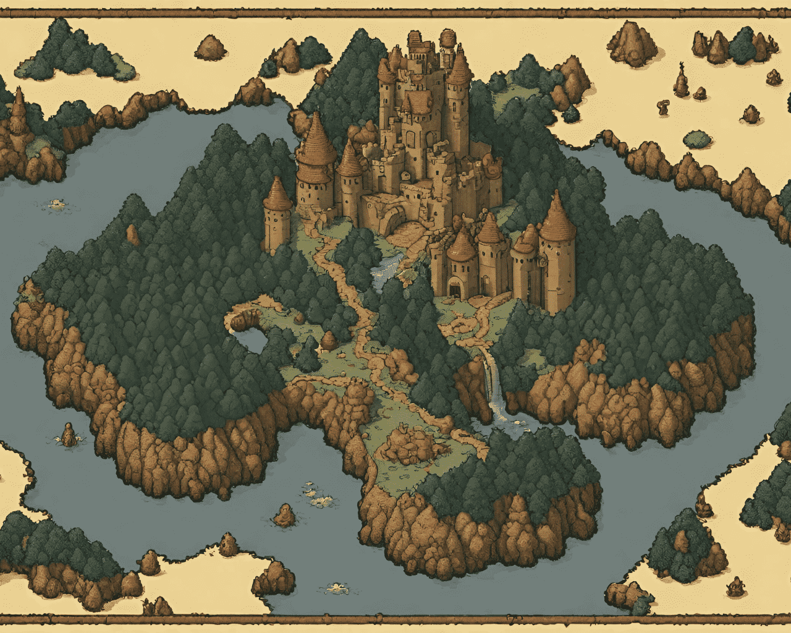
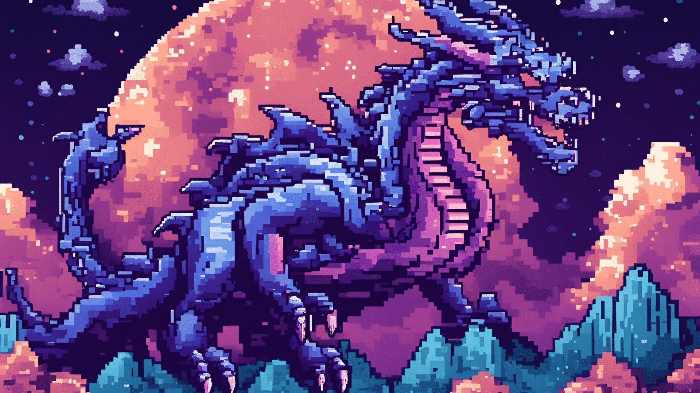
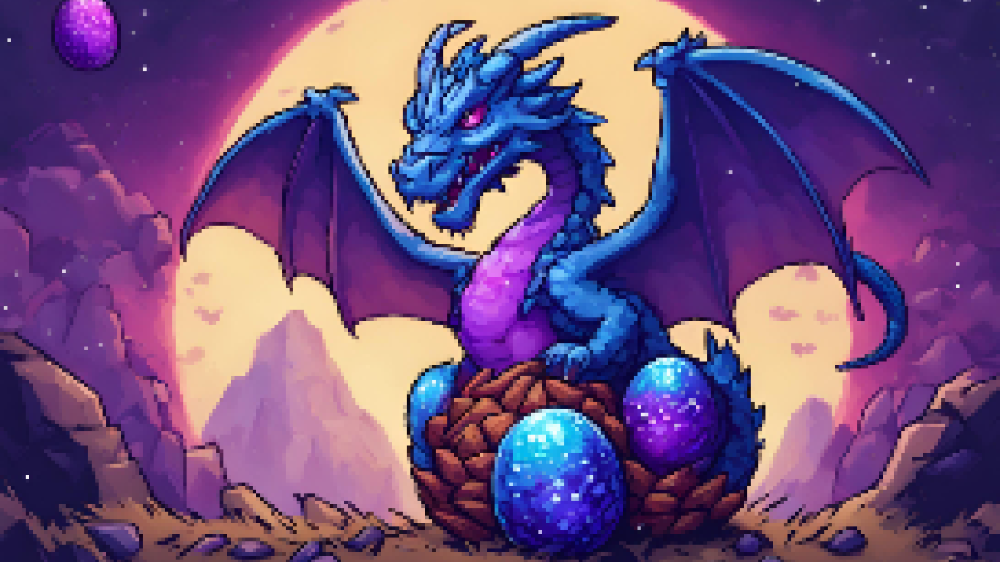
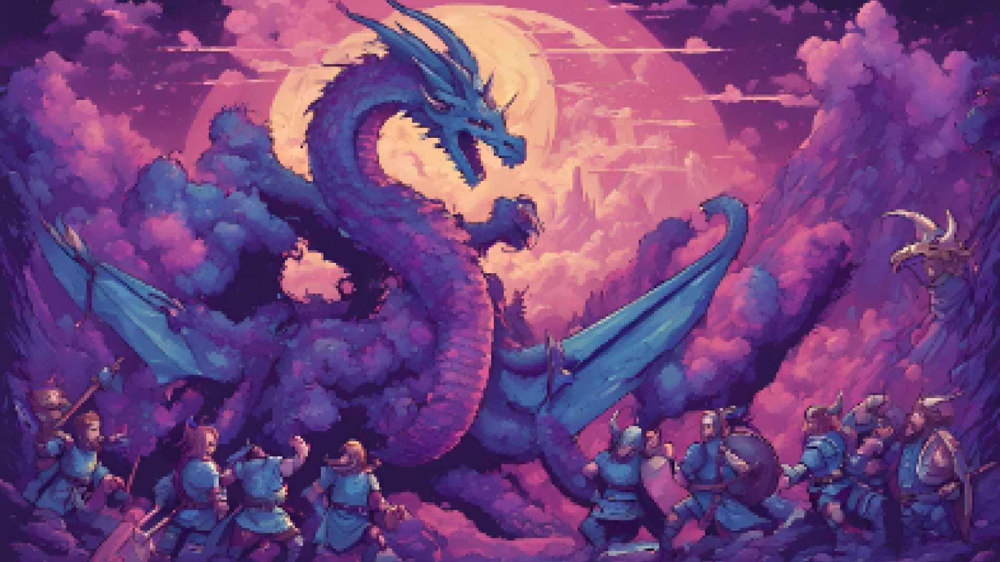
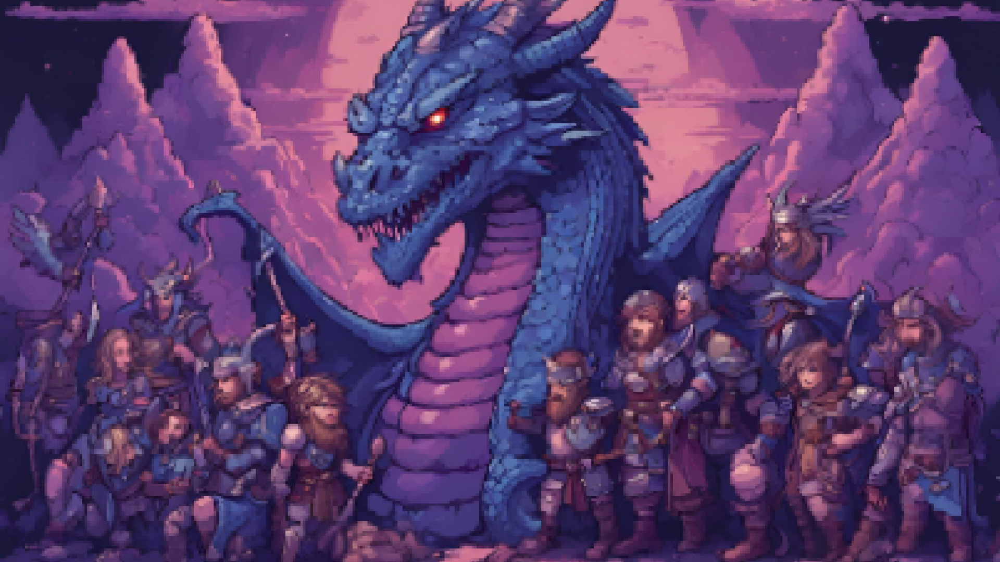
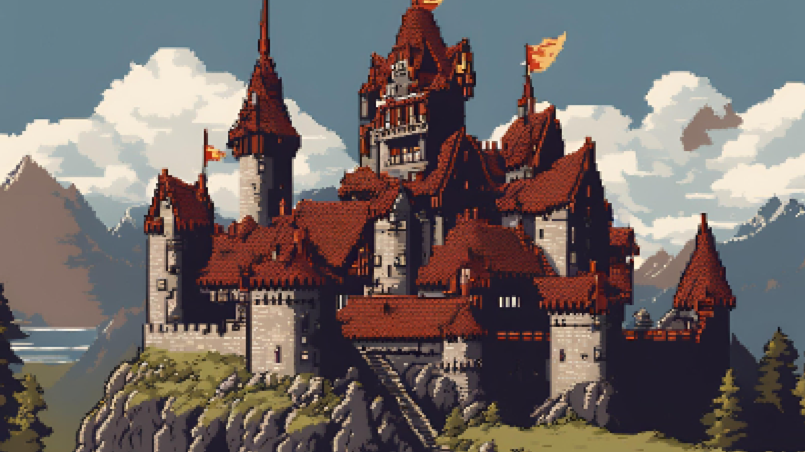

Home
Character
Dragon Class
Isle of Berk
Register
ISLE OF BERK

Welcome to the Isle of Berk, a mist-shrouded land where Vikings and dragons clash in endless battle. This rugged island, perched on the edge of the world, echoes with the roars of dragons and the war cries of Vikings. Yet, amid the conflict, a whisper of an ancient prophecy hints at a time when these fierce enemies were allies. Here, every sunrise brings battle, and every sunset whispers the possibility of peace.

One fateful night, as the northern lights danced across the sky, a colossal shadow emerged from the heavens. Galactricon, the cosmic dragon, descended upon Berk. Unlike any dragon before, Galactricon radiated tranquility and wisdom. Tales spoke of this celestial being, a dragon of peace, who journeyed across galaxies to heal and unite. Its presence brought hope, a sign that dragons and Vikings might find harmony at last.
While exploring the island's far reaches, the Vikings stumbled upon a hidden nest of massive, glowing eggs. Guarding them was Galactricon, towering over all other dragons. At the sight of its immense size and cosmic aura, the paranoid Vikings felt an overwhelming sense of threat. Gripped by fear and mistrust, they readied their weapons, preparing to attack, unable to comprehend the peaceful nature of this celestial giant on Berk.


The Vikings, gripped by paranoia, launched their attack on Galactricon, arrows and axes flying through the air. The cosmic dragon, refusing to retaliate with lethal force, merely defended itself, using its immense wings to shield the eggs and its radiant energy to deflect the blows. Amid the chaos, four Vikings noticed something remarkable—Galactricon wasn't trying to kill them. Unlike any other dragon, it sought only to protect, not to destroy.
The four Vikings, realizing Galactricon's peaceful intent, urgently warned the others to stop their attack. As the weapons lowered, they communicated with Galactricon, who explained its mission to protect the eggs and avoid conflict. Understanding the need for peace, the Vikings agreed. Galactricon expressed a desire for harmony between dragons and humans. Together, they forged a truce, envisioning a place of unity where both species could coexist peacefully on Berk.


As a symbol of their newfound truce, the Vikings and Galactricon established Zen Dragon Academy. Here, humans learned about dragon behavior and care, while dragons were taught to control their fierce nature. The academy became a beacon of hope and cooperation, fostering understanding and friendship. This unique institution on Berk marked the beginning of a harmonious era, where dragons and Vikings coexisted and thrived together in peace.